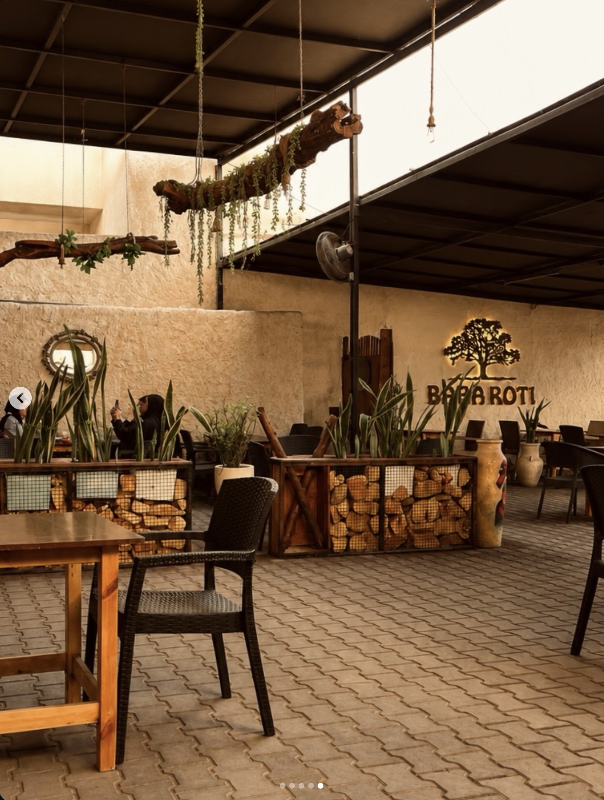

In 20xx, Asem had an idea to write an article about watching the streets of Gaza every day. Since 2023, we’ve seen 70-80% of these streets become completely defaced and destroyed.
Select a conversation
This is Al-Nasr Street in Gaza, Palestine, where our story begins.
A young journalist, Asem Al Jerjawi, spent a lot of time in this neighborhood.

[Asem Intro]

One of the cafes on Al Nasr street is Baba Roti, a place Asem came to know very well during the war, in search of a better internet connection and community.
At Baba Roti, Asem met x, and then x introduced him to y, and soon after, the group included z and abc too. Next to a towering tree, cascading with colorful handwritten notes, a sense of community emerged, as the same faces returned to this cafe over and over.
A sense of familiarity, of knowing people’s faces and names, of knowing the neighborhoods and the streets, is common in a place as small and connected as Gaza.
In 20xx, Asem had an idea to write an article about watching the streets of Gaza every day. Since 2023, we’ve seen 70-80% of these streets become completely defaced and destroyed.
As we all know, the human loss and urban devastation in Gaza have reached an unimaginable scale. [interview footage]
Think of a city you hold dear: an apartment you moved away from,
a restaurant you loved that has since shut down,
A city you haven’t been able to return to in a long time…
Think of an apartment you moved away from
a restaurant you loved that has since shut down,
A city you haven’t been able to return to in a long time[…]
For Asem, the effort to hold on to these memories, for himself, his friends, and his community, started with photos and voice notes of everyday life in the city.
By reaching out to family, like his brother Hussein, and friends, like x, y, or z, an archive of everyday memories began to evolve from a community that once sat in the same room day after day at Baba Roti.
On your device, you receive the same digital fragments…
Receiving fragments...